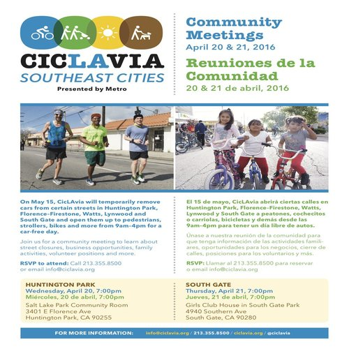
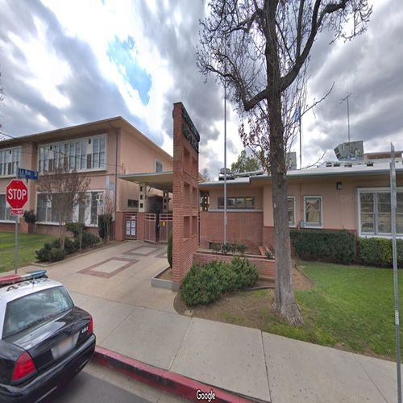
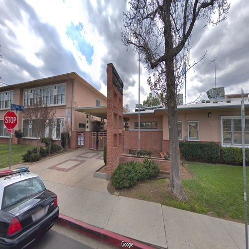

Julio Cano Ho
I studied at University of California, Riverside to get a better grasp on poetry. I originally enrolled as a Chemistry major, but I decided near the end of my Freshman Fall quarter that it wasn't a career I wanted to dedicate myself to. The following quarter was where I enrolled as undeclared and took a creative writing course, having an interest for it aside from chemistry. After that quarter, I decided to major as a Creative Writing Major, focusing more on poetry.
My endeavor towards this craft is something I appreciate, as it helped me better to understand myself and to better understand my own upbringing and the world around me. I focused on poetry because growing up, I often read science fiction books and non-fiction books, one of my favorite fiction books then being "The Book Thief" and my favorite non-fiction book being a collection of stories with bear encounters from Alaska. I did read pomes and learn about poets from K-12, but I wanted to know more about poetry. I thought it would help me better understand how to make lyrics for music because I loved reading the lyrics to songs I listened to. I liked reading the lyrics apart from the music they accompanied to see the meaning they held and note how they were written. Also, I was drawn to poetry because some poems I read were lyrical, and I wanted to learn how to make my own poems that were both musicl and imagistic.
I loved making poems and studying the various forms that are a part of this field, like the ghazal, the haiku, and the dirge. Each of these have their own use, their own lyricality that it helped me find my own voice as I honed my craft and learned many more forms to play with. The pandemic was a blessing in disguise for me, as poetry was an avenue to take time and reflect on myself about everything that I experienced thus far. It was during this time that I created an intimate piece dedicated to my parents, involving the imagery of eggs throughout the poem as I recalled various moments of life of my mom, my father, and my time in college. It was hearfelt and helped me to remember some memories I had, like the aquarium at a convalescent home my father had worked in ever since he immigrated to the United States, or like how my mother always mentioned Cobán and the algid dawns she awoke to in her village on the mountains. For my college experience, I shared a brief moment of when I went to a retreat and made eggs for breakfast for around 100+ people, an hour drive away from Riverside up in the mountains and wondering if I would stick with the group I was a part of or go back home.
Experience
Outreach
• Asked people their opinions about the event
• Helped them understand the questions if they didn't know
• Translated into Spanish for Spanish speakers
Event Helper
• Responsible for setting up stations before event starts
• Check different stalls and ensure they have their necessary resources
Dorm Maintenance
• Ran errands for supervisors (i.e. fetching equipment, communicating with other workers)
• Gave new paint jobs on walls with dull paint
• Cleaned shower drains and changed filters for the AC
• Installed curtains for shower stalls
Education
UC Riverside
Portfolio

.jpg)

.jpg)
